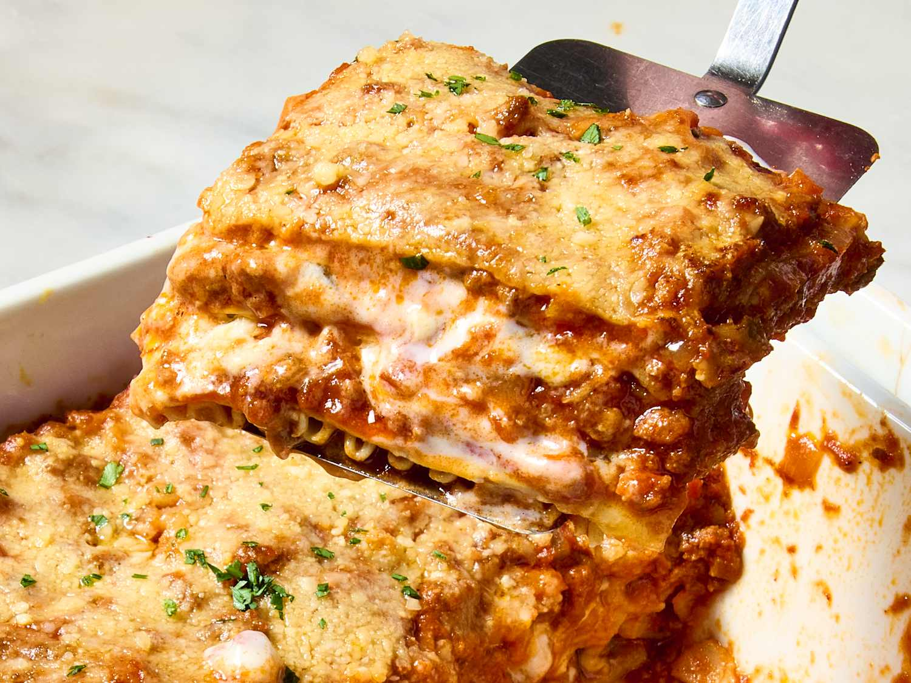

Garfield's Lasagna Recipe

Dish Description
Golden layers of tender pasta embrace a rich, slow-simmered meat sauce infused with garlic, onions, and aromatic herbs. Velvety béchamel and creamy ricotta melt into every bite, blending perfectly with the tangy depth of marinara. Generous layers of bubbling mozzarella and sharp Parmesan form a golden, crispy crust on top, releasing an irresistible aroma as it bakes to perfection. Each forkful is a comforting harmony of savory, cheesy, and perfectly seasoned goodness—warm, hearty, and utterly satisfying. Whether fresh from the oven or as next-day leftovers, lasagna is the ultimate indulgence in classic Italian comfort food.
Steps to Create Lasagna
Step 1: Prepare the Components
- Cook ground beef or Italian sausage with garlic, onions, and marinara sauce; simmer to blend flavors
- Mix ricotta cheese, egg, Parmesan, and Italian herbs for a creamy layer.
- Boil lasagna noodles until al dente (or use oven-ready noodles)
Step 2: Assemble the Layers
- In a baking dish, layer sauce → noodles → ricotta mix → mozzarella, repeating until full.
- Finish with a generous mozzarella and Parmesan topping.
Step 3: Bake & Serve
- Cover with foil and bake at 375°F (190°C) for 30 minutes, then uncover for 10-15 minutes until golden.
- Let it rest for 10 minutes before slicing. Enjoy! 😋